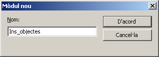

UF4. Fulls de càlcul
G rapida - macros
Crear macros
Una macro són una sèrie d'ordres i d'accions que es poden executar de manera automàtica.
Les macros de l’OpenOffice.org Calc estan creades en OpenOffice.org Basic.
Si feu una acció repetidament, es pot gravar una macro a fi d'automatitzar l'acció. Una macro es grava de la mateixa manera que una casset. Després es pot activar. Abans d'enregistrar la macro, s'han de planificar les accions. Les macros convé desar-les en el document actiu si es vol que formin part del document.
Enregistrar una macro
- Seleccioneu l'opció de menú Eines | Macros | Enregistra la macro. En fer-ho s'activa una petita finestra que conté només el botó Atura l'enregistrament

- Efectueu les accions que desitgeu quedin enregistrades
- Premeu el botó Atura l'enregistrament
Al diàleg Macros bàsiques de l'OpenOffice.org que us haurà aparegut, podeu desar la macro enregistrada
- Premeu sobre Sense nom1 (si el fitxer ja tenia nom, apareixerà el seu nom)
- Premeu el botó Exercici nou
- Escriviu el nom del mòdul (en l'exemple s'ha utilitzat Ins_objectes) i premeu D'acord
 - Al requadre Nom de la macro escriviu el nom que voldreu adjudicar a la macro (si no el canvieu, l'OpenOffice.org l'enregistrarà amb el nom de Main); en l'exemple s'ha fet servir Imatges
- Premeu el botó Desa
- Podeu comprovar que s'ha creat i enregistrat la macro si accediu a Eines | Macros | Organitza les macros | OpenOffice.org Basic…
- Si teniu curiositat, amb el botó Edita Podeu accedir a veure el codi que s'ha generat (la macro correspon a la part del programa que hi ha entre Sub imatges i End sub). Sortiu de l'editor de l'OpenOffice.org Basic amb Fitxer | Tanca
Executar una macro
- Demaneu l'opció de menú Eines | Macros | Organitza les macros | OpenOffice.org Basic…
- Seleccioneu la macro que voleu executar (en l'exemple, la que s'havia creat abans)
- Premeu el botó Executa